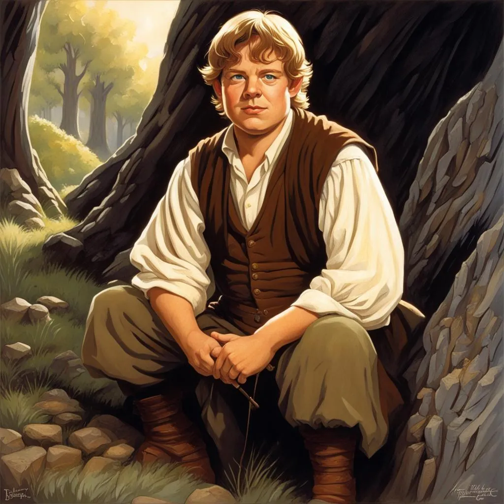

Kim jest?
Samwise Gamgee, powszechnie nazywany Samem, to hobbit z Shire, znany przede wszystkim jako ogrodnik i najlepszy przyjaciel Froda Bagginsa. W opowieści Władca Pierścieni J.R.R. Tolkiena Sam odgrywa kluczową rolę jako niezłomny towarzysz Froda w jego misji zniszczenia Jedynego Pierścienia. Sam jest symbolem lojalności i oddania. Choć na początku nie rozumie w pełni niebezpieczeństwa misji, do której został wciągnięty, szybko udowadnia, że jest gotów zrobić wszystko, by chronić swojego pana i przyjaciela. Jego niezachwiana wierność i prostolinijność wielokrotnie ratują Froda przed niebezpieczeństwem, zarówno fizycznym, jak i psychicznym. Pomimo swojej pozornie zwyczajnej natury, Sam wykazuje niezwykłą odwagę i determinację. Stawia czoła groźnym przeciwnikom, takim jak Nazgûle, orkowie czy pająk Szeloba, którego pokonuje, by uratować Froda. Jego siła leży nie tylko w fizycznych czynach, ale także w emocjonalnym wsparciu, które oferuje Frodowi w najtrudniejszych momentach. Sam ma także prostą, ale piękną wizję życia: pragnie wrócić do Shire, pielęgnować ogród i założyć rodzinę. Jego miłość do przyrody i marzenie o pokoju nadają mu ludzki wymiar, z którym łatwo się utożsamić. Po zakończeniu misji, gdy Frodo opuszcza Śródziemie, Sam wraca do domu, by wieść spokojne życie. Żeni się z Różyczką Cotton i zostaje ojcem, a jego rodzina staje się jednym z filarów odnowionego Shire.